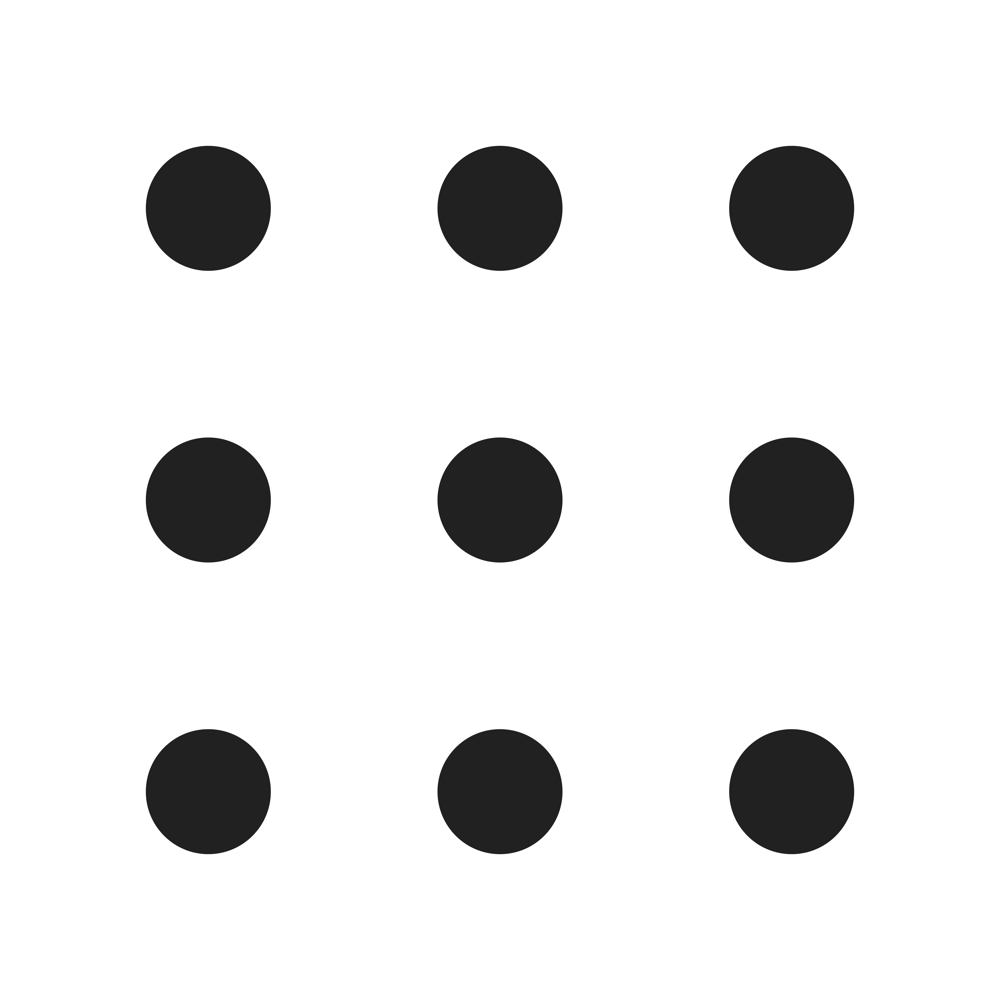
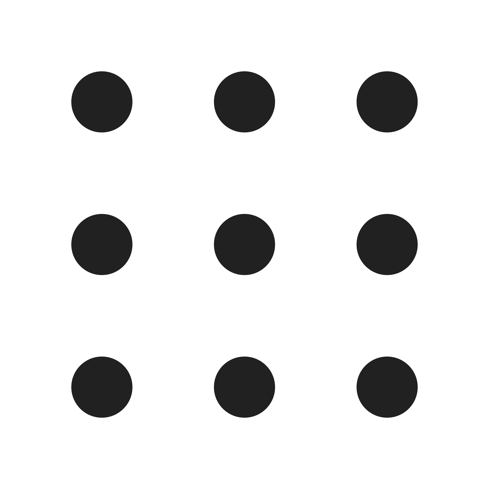

Site Purpose
We live in an unprecedented time, more information is finger-taps away than was available in all of the last 3,000 years combined. The big problem we face then isn’t where is it all? It’s how, and what matters most, because it’s all available. I’m proposing we build a centralized hub where important information is organized and summarized in easy to access and understand chunks. Essentially the website would allow access to information that’s clear, concise and appropriate on a broad range of topics. If someone wanted to learn something they would go here, because the answer would be clear, organized, concise, and true, delivered in a bit sized chunk without distraction or fluff. It could change the way we study, learn, look for answer etc. Help us learn, not just intake.
Site Map
Because of the minimalist mission of the website all pages will bw minimal in nature. Idealy the website would consist of the following:
- A landing page.
- Some kind of search result or topic presentation or selection page.
- An information packet page for the topic selected where the information is presented.
- A simple contribution form page.
Site Content
Landing Page: The landing page should be focuesed on the principle of less is more, avoiding any clutter as possible. It could contain a main search bar or invitation to select a topic, and a short description of website services below that. The website would have a simple footer with social media links etc. Specifically the footer would provide an invitation link to contribute.
Result Page The result page would include a search bar or topic link selection for users to re-search or select if needed. The page would show results based on a users search input or topic selection, and would simply list the website's available information packet titles as links which lead to the information packets. The page would include some minimal filter options to refine by no more than 10 topics. The page would include means to get back to the main landing and a consistent footer.
Packet Page The packet page would present concise and relevant information that does not extend over 10 minutes if possible. It would list reading time, an information accuracy rating, and a means to return to the main menu or search results page as well as consistent footer.
Target Audience
Packets' target audience ranges from teenage users, all the way up to senior citizens. Specifically it's for students and people who would prefer clean concise packets of information over the vast dumps of information available online.
- The service would be free to use, but funded by donations.
- We'd like to provide a steamlined and simplistic layout that's clear for all users. The simple layout would reflect our commitment to simplicity and concise presentation.
- Similarly it would be preferable to keep only essential functionality as the power of this platform comes from it's singular purpose of well presented information.
- We would like to avoid stores or banners that may distract users.
- We would like to draw in users who want specific and clear information, or users seeking information they can understand and trust.
- We would like to provide a broad range of information covering many topics as possible, but easily navigatable.
- Information should be organized in concise and accurate bite sized packets that wouldn't take over 10 minutes to read.
Colors
Right now I'd like to use 3 basic colors, an off white, a faded red, and a faded green. That would be extent of my colors.
EDECDC
74A995
7F292F
Fonts
For fonts I would like to use the one in use for this siteplan. Trebuchet MS
In some instances I would also like to use Roboto Mono.
Media
I'd like to use images sparingly on the website, most media would be icons. I've included a few below that may be used, or at least have potential.
 
